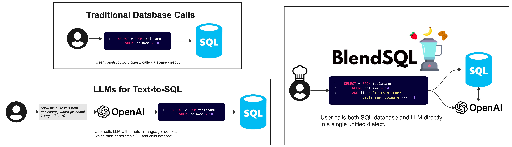

Home


SQL 🤝 LLMs
pip install blendsql
✨ News
- (5/6/25): New blog post: Language Models, SQL, and Types, Oh My!
- (5/1/15): Single-page function documentation
- (3/16/25) Use BlendSQL with 100+ LLM APIs, using LiteLLM!
- (10/26/24) New tutorial! blendsql-by-example.ipynb
- (10/18/24) Concurrent async requests in 0.0.29! OpenAI and Anthropic
LLMMapcalls are speedy now. - Customize max concurrent async calls via
blendsql.config.set_async_limit(10)
Features
- Supports many DBMS 💾
- SQLite, PostgreSQL, DuckDB, Pandas (aka duckdb in a trenchcoat)
- Supports many models ✨
- Transformers, OpenAI, Anthropic, Ollama
- Easily extendable to multi-modal usecases 🖼️
- Write your normal queries - smart parsing optimizes what is passed to external functions 🧠
- Traverses abstract syntax tree with sqlglot to minimize LLM function calls 🌳
- Constrained decoding with guidance 🚀
- When using local models, we only generate syntactically valid outputs according to query syntax + database contents
- LLM function caching, built on diskcache 🔑
BlendSQL is a superset of SQLite for problem decomposition and hybrid question-answering with LLMs.
As a result, we can Blend together...
- 🥤 ...operations over heterogeneous data sources (e.g. tables, text, images)
- 🥤 ...the structured & interpretable reasoning of SQL with the generalizable reasoning of LLMs
It can be viewed as an inversion of the typical text-to-SQL paradigm, where a user calls a LLM, and the LLM calls a SQL program.
Now, the user is given the control to oversee all calls (LLM + SQL) within a unified query language.

For example, imagine we have the following table titled parks, containing info on national parks in the United States.
We can use BlendSQL to build a travel planning LLM chatbot to help us navigate the options below.
| Name | Image | Location | Area | Recreation Visitors (2022) | Description |
|---|---|---|---|---|---|
| Death Valley | California, Nevada | 3,408,395.63 acres (13,793.3 km2) | 1,128,862 | Death Valley is the hottest, lowest, and driest place in the United States, with daytime temperatures that have exceeded 130 °F (54 °C). | |
| Everglades | Alaska | 7,523,897.45 acres (30,448.1 km2) | 9,457 | The country's northernmost park protects an expanse of pure wilderness in Alaska's Brooks Range and has no park facilities. | |
| New River Gorge | West Virgina | 7,021 acres (28.4 km2) | 1,593,523 | The New River Gorge is the deepest river gorge east of the Mississippi River. | |
| Katmai | Alaska | 3,674,529.33 acres (14,870.3 km2) | 33,908 | This park on the Alaska Peninsula protects the Valley of Ten Thousand Smokes, an ash flow formed by the 1912 eruption of Novarupta. |
BlendSQL allows us to ask the following questions by injecting "ingredients", which are callable functions denoted by double curly brackets ({{, }}).
Which parks don't have park facilities?
SELECT "Name", "Description" FROM parks
WHERE {{
LLMMap(
'Does this location have park facilities?',
values='parks::Description'
)
}} = FALSE
| Name | Description |
|---|---|
| Everglades | The country's northernmost park protects an expanse of pure wilderness in Alaska's Brooks Range and has no park facilities. |
What does the largest park in Alaska look like?
SELECT "Name",
{{ImageCaption('parks::Image')}} as "Image Description",
{{
LLMMap(
question='Size in km2?',
values='parks::Area'
)
}} as "Size in km" FROM parks
WHERE "Location" = 'Alaska'
ORDER BY "Size in km" DESC LIMIT 1
| Name | Image Description | Size in km |
|---|---|---|
| Everglades | A forest of tall trees with a sunset in the background. | 30448.1 |
Which state is the park in that protects an ash flow?
SELECT "Location", "Name" AS "Park Protecting Ash Flow" FROM parks
WHERE "Name" = {{
LLMQA(
'Which park protects an ash flow?',
context=(SELECT "Name", "Description" FROM parks),
options="parks::Name"
)
}}
| Location | Park Protecting Ash Flow |
|---|---|
| Alaska | Katmai |
How many parks are located in more than 1 state?
SELECT COUNT(*) FROM parks
WHERE {{LLMMap('How many states?', 'parks::Location')}} > 1
| Count |
|---|
| 1 |
Now, we have an intermediate representation for our LLM to use that is explainable, debuggable, and very effective at hybrid question-answering tasks.
For in-depth descriptions of the above queries, check out our documentation.
Citation
@article{glenn2024blendsql,
title={BlendSQL: A Scalable Dialect for Unifying Hybrid Question Answering in Relational Algebra},
author={Parker Glenn and Parag Pravin Dakle and Liang Wang and Preethi Raghavan},
year={2024},
eprint={2402.17882},
archivePrefix={arXiv},
primaryClass={cs.CL}
}
Acknowledgements
Special thanks to those below for inspiring this project. Definitely recommend checking out the linked work below, and citing when applicable!
- The authors of Binding Language Models in Symbolic Languages
- This paper was the primary inspiration for BlendSQL.
- The authors of EHRXQA: A Multi-Modal Question Answering Dataset for Electronic Health Records with Chest X-ray Images
- As far as I can tell, the first publication to propose unifying model calls within SQL
- Served as the inspiration for the vqa-ingredient.ipynb example
- The authors of Grammar Prompting for Domain-Specific Language Generation with Large Language Models
- The maintainers of the Guidance library for powering the constrained decoding capabilities of BlendSQL